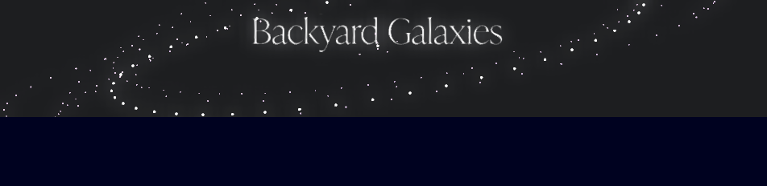

FP1: Final Project Prototype

For my final project prototype, I created a photography portfolio of my dad's astrophotography using React.
Usage
You can access the portfolio here.
Final version Description
The final version will be fully themed and animated. Since the subject of the website is astrophotography, I would like to display the images in a way that makes them look like a part of a solar system. You can view photos based on the location of the subject of the photo in relation to the solar system. Once a user clicks a planet, the website should zoom in and show the actual picture as well as a brief description.
Development Process
- Learned how to create a React app.
- Created a 3-D model of a galaxy using Spline.
- Imported the model into my website using the React Spline library and Spline's API.
- Coded & styled components that would display the planets and photo window pop-up.
- Create interactions between planets and photo window pop-up that allows user to open up the photo pop-up and close it.
- Create component for the About page.
- Style the About page and populate it with information.
This is how the 3-D model first looked when I imported it. I had to adjust the code to make it look the way I wanted it to.
Issue Deep-Dive
One of the biggest issues I faced was actually create the interaction that allows users to X out of the photo pop-up window.
React is excellent for dynamic websites because it has a hook called 'useState' that will re-render the site every time the state of an element changes. However, this is my first time coding in React so this concept was (and is) still very foreign to me.
Before I had even begun coding my project, I followed many React tutorials that gave me some general background knowledge of how React works. This is the knowledge I used coming into the project, but of course, it was not enough. I needed to find the solution for my specific scenario, which was the ability to click one element and hide another element and itself on click.
I searched up tutorials on how to hide/show elements in React but none of them had my specific scenario. For one, the way my files were structured is different from many of the tutorials. In addition, most tutorials assumed that the element the user is clicking would not disappear. In other words, the button you click to make other elements be hidden did not hide itself. If you take a look at my website, the X itself is disappearing in addition to the rest of the window.
After much trial and error, I figured out which of my components corresponded to the tutorials'. I also took information from multiple tutorials which eventually made the site work as desired.
Ideas and Future Work
I have showed my dad the portfolio and he loves it! He did mention that he would like to have more information about each image, such as the location, how the photo was taken, etc. He also mentioned that he would love it if other people could post on the website as well. That could be an interesting idea to explore with something like Firebase.
Project Scope
My project scope has not changed too much. I'm glad that I was able to make most of my vision come through.
For the final version, I may try to explore the animations that I originally anticipated. I'd also like to add the information about the photos that my dad requested.
Time Management
The timeline for this prototype was actually faster than I expected. I was not anticipating that I would be able to create and add the solar system in addition to the photo pop up interaction. There definitely were unanticipated roadblocks, though, especially with Spline and creating the interactions, as mentioned in my issue deep-dive.
Implementation Plan
I actually now have more freedom with my implementation. I do not need to worry about having all the components functioning and I can just add more details and designs to my project.
Kudos
Thank you Hannah for helping me figure out how to access Spline's API and make my galaxy look just the way I want it!